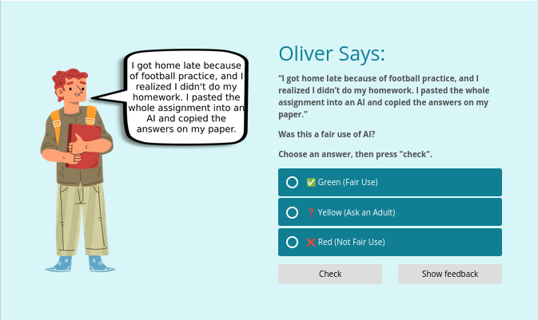
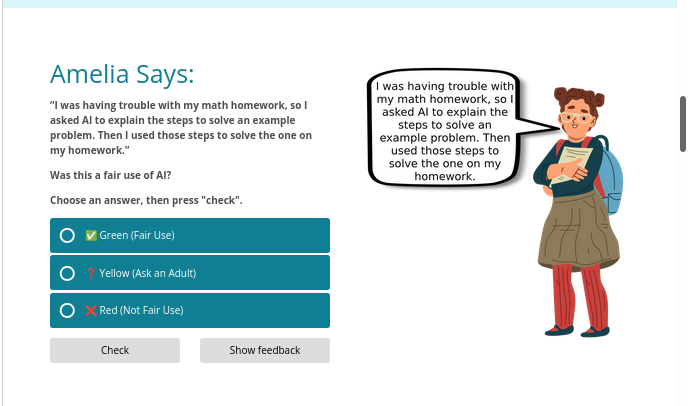
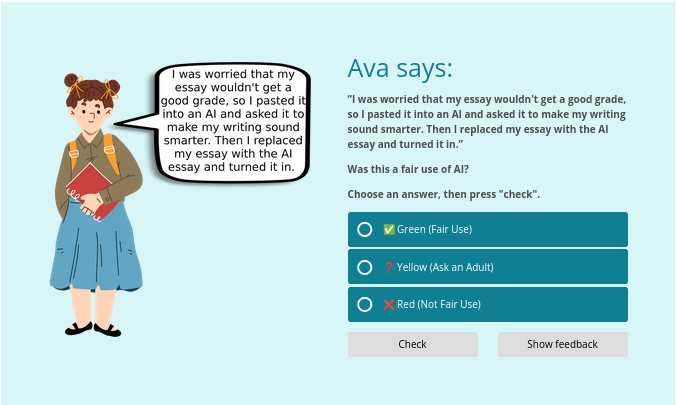

AI and Me: Safe, Smart, and Ethical
This four lesson unit engages students in meaningful scenario-based learning to help them use generative AI in ways that promote digital citizenship and educational ethics.
Purpose: This pilot course helps students in grades 5–6 develop responsible AI habits by teaching the principles of personal data safety, ethical use, and digital citizenship in an accessible, scenario-based format.
Target Audience: 5th–6th grade students participating in computer science classes with moderate-to-high comfort with technology, but limited awareness of AI ethics and safety.
Project Objectives: By the end of the course, learners will be able to identify safe, ethical, and responsible uses of AI in academic and personal contexts.
Responsibilities: Instructional designer (lesson planning, time mapping, activity design, visual design)
Format: In-person instruction with printable materials
Duration: Four 40-minute sessions
Screen shots of interactive module:



Created with Adapt Authoring Tool
View Interactive ModuleSCORM package available upon request
The Problem
Students are increasingly exposed to generative AI, but most elementary classrooms lack structured, age-appropriate guidance on their use. As a result, students are often unclear about how AI systems work, what information is safe to share, and how best to use AI for learning without crossing into cheating or plagiarism.
The Solution
Following consultation with district stakeholders, I designed an in-person, four lesson unit. This format supports peer discussion as students work through realistic AI safety and ethics scenarios.
In-person instruction also enables collaborative creation of a final "AI Code of Honor," giving students shared ownership of the commitments established by the class.
My Process
Analysis
Following the ADDIE model, I began with an analysis of the instructional problem, desired outcomes, learners, and learning environment. I interviewed classroom teachers and the district curriculum director to identify key concerns regarding AI use for this age group.
I also conducted student interviews to understand prior knowledge, perceptions, and preferences.
Design
Using insights from the analysis phase, I established three primary learning goals:
- Students can distinguish between safe and unsafe information to share with AI tools.
- Students can identify common "red flag" patterns in AI messages.
- Students can recognize the difference between learning support and cheating with AI.
To assess these goals, I designed a culminating performance task: a collaboratively created AI Code of Honor. This task serves as both an authentic assessment and a shared commitment to responsible AI use.
Development
After establishing the core design tenets, I developed the full set of student-facing materials and teacher guides. Materials were reviewed for clarity and accessibility, and a small usability pilot was conducted to identify areas for refinement prior to full implementation.
Implementation & Evaluation
The unit ran as a full in-class pilot across two 5th and 6th-grade sections. Evaluation used the Kirkpatrick Four-Level Model adapted for a middle school setting, with an eye toward whether the learning actually stuck beyond the classroom.
Each lesson achieved strong exit ticket mastery, with 87.65% of learners reaching full mastery and zero failures by the final lesson. Mastery exceeded 72% in every lesson of the unit.
These results show the knowledge gained, and informal surveys from teachers showed that students behavior changed, with a decrease in AI cheating seen in class. The organizational impact was shown through a decrease in behavioral referrals involving AI cheating.
Formative data identified Lesson 2 as the weakest practice point and drove a targeted redesign of that activity.
Project Documents
View the supporting materials created for this project: